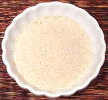

 |
Toasted Sweet Rice PowderThailand | ||||
| Makes: Effort: Sched: DoAhead: |
2 oz * 15 min Yes |
This standard Thai ingredient is both a thickener and flavoring. It is available commercially in small shaker jars, but it's fresher made at home. | |||
|
1/4 |
c |
Sweet Rice (1) |
Make: - (15 min)
|